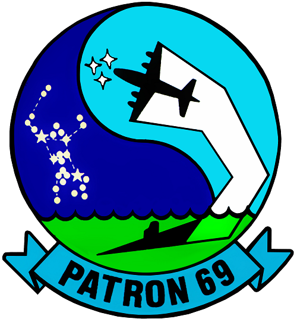

PATRON SIX NINE
VP-69 Totems | Homepage
SQUADRON MISSION
The squadron's mission is to maintain readiness in anticipation of rapid deployment while providing operational support to the Fleet. Aircrews train to support this mission by maintaining proficiency in antisubmarine warfare operations, anti-surface warfare, battle group coordinated operations, intelligence collection, surface surveillance, reconnaissance, counter-transnational organized crime operations and mine warfare.

The squadron patch was designed by YN2 John Rundorff and PR1 Bruce Froman. The background signifies a modified 69, an ancient symbol of opposing forces. The dark represents night and the light blue represents day. The circle represents the "around the clock" readiness and surveillance. In the foreground, at the left, is the constellation Orion, symbolic of the name of the P-3 aircraft. The white track on the right represents the trail and contact of the P-3 with the submarine located at the bottom under the water. The three star group in front of the track signifies Plane 3, or P-3.
SQUADRON HISTORY
Patrol Squadron SIX NINE (VP-69) was commissioned a Reserve Force Squadron flying the SP-2H "Neptune" in November 1970 at Naval Air Station Whidbey Island, Oak Harbor, Washington. The squadron currently flies P-3C "Orion" BMUP and AIP aircraft.
For over 44 years, the squadron has operated successfully throughout the world, supporting deployments and detachments to Spain, Guam, Japan, Thailand, Oman, Republic of the Philippines, Australia, Alaska, Hawaii, Puerto Rico, Ecuador, Panama, El Salvador, Belize, Brazil, Chile, Peru, Colombia, Argentina, Iceland, Scotland, Germany, France and Canada.
Throughout the years, VP-69 has received countless awards and recognition as a leader in the Reserve Force, including: COMNAVAIRESFOR Noel Davis Battle Efficiency Award, 1991, 1995, 1998, 1999, 2001, 2004, 2011, 2012, 2013, 2014; CNO Safety Award, 1980, 1991, 1995, 1997, 1998, 1999, 2007, 2009, 2010, 2014; COMRESPATWING Donald M. Neal "Golden Wrench" Award, 1979, 1980, 1994, 1995, 2000, 2001, 2014; COMNAVAIRFOR Blue M Award, 2010, 2011, 2012, 2013, 2014; COMNAVAIRFOR Blue H Award 2013, 2014; COMNAVAIRESFOR David McCambell Trophy Award 2013.
Over the past several years, VP-69 has become fully integrated into the CNO's Fleet Response Plan. Totem personnel and aircraft are involved in every facet of the Maritime Patrol and Reconnaissance Force, providing aircraft and surge-ready aircrews in direct support of real-world Overseas Contingency Operations. VP-69 aircrew, maintenance and support personnel are, as we speak, demonstrating superior performance alongside their active duty counterparts during the squadron's second mobilization and deployment to Seventh Fleet, providing direct operational support to CTG 72.2. Team Totem proudly looks forward to the next six years of flying the venerable Lockheed P-3C Orion and a long future thereafter operating the state-of-the-art Boeing P-8A Poseidon.

CHECKING IN?
Welcome Aboard! You should be receiving your "Welcome Aboard" packet soon. In the meantime, you may find more information about checking into VP-69 and NASWI here.KEEP IN TOUCH
VP-69 acebook PageVP-69 Ombudsman acebook Page